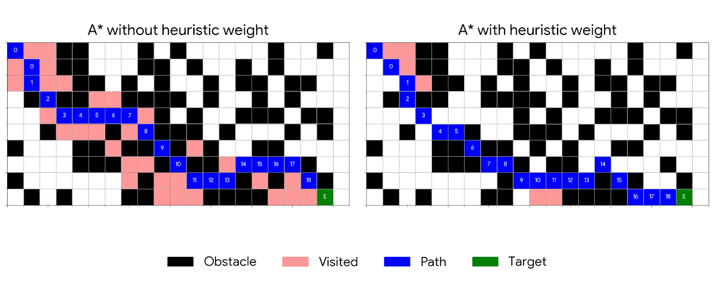
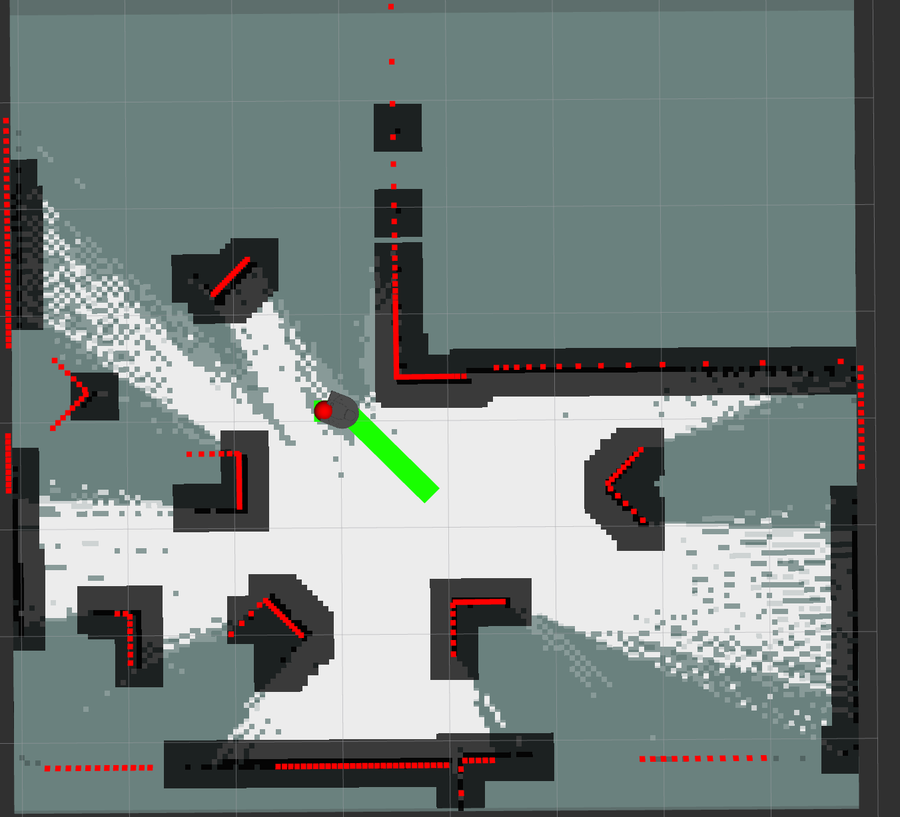
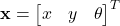
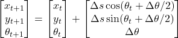
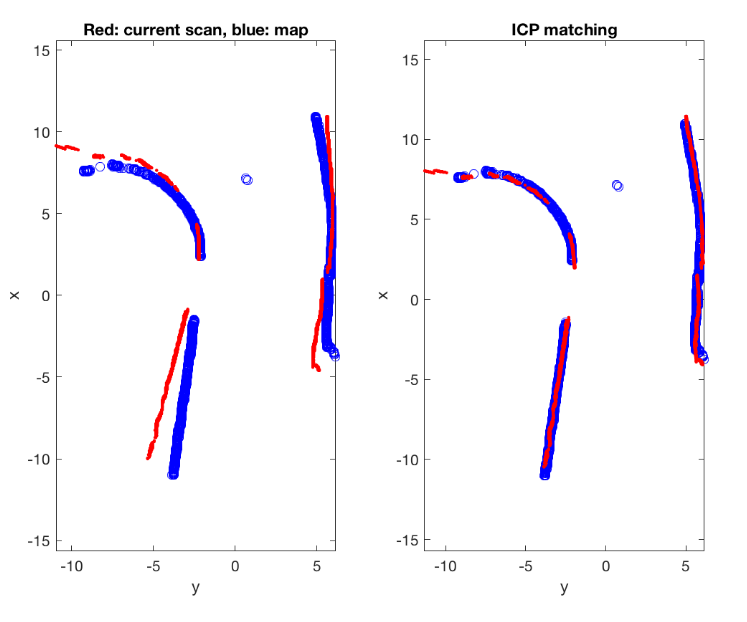

Path Planning and Execution
A* Path Planning
For the general-purpose planning algorithm to get from place to place, we used A*. A* is a graph traversal algorithm to find the shortest path between two points. It is more computationally efficient than other graph algorithms like Dijkstra's Algorithm or Breadth First Search because it uses a heuristic to prioritize paths that take you closer to your goal.
The way this works in practice is for each potential node to visit that is a neighbor of a previously visited node, and a total cost score is estimated. This cost for a given node is the sum of the actual distance to get from the start to the node and the heuristic's estimated cost from the node to the finish. At each iteration of the loop, the node with the lowest cost is visited. When you do this recursively, the first time you visit the finish node, will always be the shortest path.
There are a few design decisions for this algorithm. You have to decide what the graph you are traversing is, what the heuristic is, and what the possible moves are. For the graph, we used the occupancy field generated by SLAM. This is a grid of cells, where each cell is either an obstacle, empty, or unknown. We treated unknown cells as empty. For the possible moves, we chose to allow the robot to move in 8 directions, so all adjacent grid cells, including on the diagonal. For the heuristic, we chose octile distance, which is the exact shortest distance on a grid when you can move diagonally, because it treats a diagonal move accurately as sqrt(2).
Additionally, we added a small multiplier to the heuristic value so that it prioritizes moves towards the goal. This is called weighted A*. Without this, on a grid-based setup, the algorithm has no incentive to prioritize moves that bring it directly towards the goal because many moves have the same weight. As shown in the graph, adding this heuristic significantly cuts down on visited nodes.

The final decision for the algorithm is how to account for the robot's width to ensure it doesn't crash into any obstacles, since the robot is bigger than a single grid cell. The simplest way to do this is to inflate each obstacle by a little more than half of the robot's width. This ensures the robot can fit in any cell that is still empty. Here is a visual of the map with the obstacles inflated.

Boustrophedon Cellular Decomposition
To generate an efficient coverage path during cleaning, we use a slightly modified Boustrophedon Cellular Decomposition (BCD). BCD is a classic coverage path planning algorithm designed to systematically cover an entire area while minimizing redundant motion. At a high level, the algorithm decomposes the free space in a map into a set of connected cells based on obstacle boundaries. Each cell represents a region that can be covered with simple, back-and-forth motion, similar to a lawnmower pattern. By breaking the problem into these smaller regions, BCD makes full-area coverage tractable even in environments with complex obstacle layouts.
In the figure above, different color path lines represent different cells created by our BCD algorithm.

Once the cells are generated, the robot follows a zig-zag coverage path within each cell to ensure that all reachable space is visited. When transitioning between cells, coverage paths alone are insufficient, so we use a general-purpose planner to move the robot from the end of one cell's coverage path to the start of the next. This combination allows the system to maintain both efficient local coverage and reliable global navigation, even when cells are separated by narrow passages or irregular geometry.
Our BCD algorithm is slightly modified to allow safer movement between travel lines. Rather than driving straight from the end of one line to the start of the next, which would often cause a collision with an obstacle, the neato will travel along the line it just cleaned until it reaches a safe spot to move over to the start of the next line. Experimentally this has completely removed all chances of collision during transition between cleaning lines.
Overall, BCD proved to be a reliable choice for our cleaning task. The structure of the algorithm makes it easy to reason about coverage while still working well with a grid-based map and a real robot. With our small modification to how the robot transitions between cleaning lines, the system is able to cover most of the mapped area safely and consistently, without excessive re-planning or repeated passes.
Waypoint Following Server
To execute the paths generated by the path planning algorithms, we wrote an Action Server that takes a trajectory of points and drives the robot to each waypoint. An action server is useful instead of a simple node with topic-only communication because it enables two-way communication without the clutter of many topics. This is perfect for long-running tasks and gives the client control to cancel a task mid-progress, allows the server to communicate its progress, and the final result. Setting up that functionality with topics would require either many topics or a complex scheme. Action servers provide a standardized way to do this.
To navigate the neato toward each waypoint, a proportional controller is used to control the angular velocity. The error input to the controller is the angle difference between the current heading and the angle needed to drive directly towards the waypoint. Once the error is less than 15 degrees, it drives with a constant linear velocity forward, while continuing to correct the angle. Once the robot is within a small radius of the waypoint, the next waypoint is set as the target.
Another useful feature we added to the waypoint follower server is retracing the path backwards, then aborting the action if the Neato bumps into anything. Retracing the path backwards is useful to ensure it can navigate out of a tight space if it gets into one. To drive backwards, it sets the target waypoint to the previous waypoint. Then, 180 degrees is added to the target direction, and the linear velocity and angular velocity are set to the opposite.
Extended Kalman Filter
Our localization system is built around an Extended Kalman Filter (EKF) that fuses wheel odometry and 2D LiDAR data to estimate the robot's pose in a known map. The EKF provides a probabilistic framework that accounts for sensor noise and model uncertainty (though no noise ended up being modeled in simulation due to time constraint) while continuously refining the robot's position and orientation in the global map frame.
State Representation
The EKF state vector is defined as:

where x and y represent the robot's position in the map frame, and theta is the orientation. The associated covariance matrix represents the uncertainty in each state.
Prediction Step
The prediction step uses incremental odometry measurements derived from wheel encoder data, where the incremental linear and orientation displacements are computed and used as the control input:

A nonlinear motion model propagates the state forward assuming planar motion with small rotational increments, defined below:

The EKF linearizes this model about the current estimate using Jacobians with respect to both the state and control input. Velocity-dependent process noise is incorporated to reflect increased uncertainty during motion.
This step produces a predicted state and covariance before measurement is taken into account.
Measurement Step
To obtain an absolute pose measurement, the system performs scan-to-map alignment using Iterative Closest Point (ICP). Each incoming LiDAR scan is converted into a 2D point cloud in the robot's base frame and aligned against another point cloud which represents occupied grids from the occupancy field / map. The predicted pose from the EKF is used as the initial guess for ICP, and the resulting rigid-body transformation that results in alignment between the two point clouds provides a measured, absolute pose estimate. Below is a set of plots showing how ICP can correct for an inaccurate pose prediction resulting from the motion model:

Correction Step
The EKF correction step fuses the ICP-based pose measurement with the predicted state. The measurement model directly observes position and orientation, allowing the use of an identity measurement matrix. Measurement noise is tuned to reflect ICP uncertainty, with larger variance assigned to orientation to account for scan ambiguity and environmental symmetry. The Kalman gain balances trust between odometry prediction and LiDAR-based correction, yielding a refined pose estimate and reduced uncertainty.
Once the refined pose estimate is computed, it is then published to its own topic "ekf_pose", where other algorithms, such as the one calculating waypoint drive commands, have easy access to.
EKF Demo